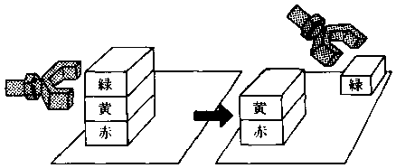

（1）
お菓子
問1 この箱の中のお菓子を一人に十個ずつ渡してください。そして、余ったら、戻してください。
問2 市議会では、身近なリサイクル運動を推進しようという提案を採択した。そして、ごみの減量化を市民に訴えるとともに、駅やスーパーなどに空きびんの回収箱を設置することにした。
問3 車を運転する人の高齢化が進み、視力、反射神経の衰えから事故を起こす件数が増えているという。
（例）あの先生の講義はたいへんおもしろい。
問題の文の下線のことばは「こうぎ」と読みます。1～4の漢字はそれぞれ、1は「ごうぎ」、2は「こうき」、3は「こうぎ」、4は「こうじ」と読みます。問題の文の「こうぎ（講義）」と、3の「こうぎ（抗議）」は同じ読み方ですから、正解は3です。
| （例） | ① | ② | ● | ④ |
問1 雑誌をはっかんするにあたって、名前をいっぱんからぼしゅうすることにした。
問2 ふりな状況になってきたが、何とかたいせいをたてなおして、今後の相手とのこうしょうにのぞみたいと思う。
問3 何度も実験をくりかえし、ついにかせつをしょうめいすることにせいこうした。
問4 その会社は、製造技術を磨き、自社のとくちょうを打ち出すことによって、ぎょうせきをのばしてきた。
（例）薬を飲んだのに、そのこうかがなかなか現れません。
問題の文の下線のことばは「効果」と書きます。1～4のことばはそれぞれ、1は「郊外」、2は「有効」、3は「交通」、4は「旅行」と書きます。問題の文の「効果」の「こう」と、2の「有効」の「こう」は同じ漢字ですから、正解は2です。
| （例） | ① | ● | ③ | ④ |
死体ははたしてだれのものか。
自分のものだとしても、死んだあとでは、所有権を実際に自分で主張することはできない。法的には、そこはどうなっているのか。それを私は、じつは知らないのである。
職業柄、年中扱っている「もの」の、所有権が不明である。そんなことで、よく仕事が勤まる。そう怒られそうだが、むろん常識的には、死体は遺族（注1）のものである。
しかし、ちょっとご想像いただくとわかるはずだが、遺族というのは、しばしば単数ではない。遺産（注2）相続の場合なら、子供にはすべて、平等の権利があるはずである。「ヴェニスの商人」ではないが、それなら肉何ポンド分の権利が、それぞれの子供にあるか。そんな議論は、聞いたこともない。
こういう議論自体が不謹慎だ。ひょっとすると、そうお考えになる方があるのではないか。もしそうなら、私としては、たいへん我が意を得たことになる。不謹慎であるとか、世の中乱れるとか、人心に与える影響を恐れる。こういった、かならずしも明確に定義できない常識が、死体に関わる多くの問題の背景となっているからである。
こうした常識を考え、それと戦うことは、けっして容易ではない。私は死体を扱うのが仕事だから、そうは言っても、それを考えざるをえない。死体をめぐって、しばしばトラブルが生じるからである。
こうした漠然とした常識。それの背景を知るためには、じつは日本の文化そのものを追究せざるをえない。私の仕事は、いつの間にか、そういう方向を向いてしまった。
遺族だって、けっして明瞭ではない。しばしば複数の遺族が出現することがあるからである。東京に住んでいる遺族が親の解剖を承諾したが、田舎から出てきた遺族がそれに反対する。こういう例も多い。すでに解剖が始まっているときに、「私は解剖するとは聞いてなかった、じつは反対だ」という親族が現れる。これは、われわれがいちばん困惑するケースである。
事前に十分に調べろと言ったって、よその家族の事情だから、それは困難である。解剖を承諾しますと言っていただくだけで、当方としてたいへん感謝している。そこを押して、「お疑いするようでもうしわけないが、もしかしたら、田舎のご親族で、解剖に反対の方がおられませんか」。そんなことを、きけるはずがないではないか。
遺族に私が殴られたりするのは、こうしたケースである。仕事の上だから、別にどうということはないが、250年の歴史を持つ解剖ですら、この国では、かならずしもきちんとした市民権を得ていないことが、よくわかる。
（養老孟司「死体の市民権」『太陽』No.359 平凡社による）
（注1）遺族：死んだ人の家族や親類
（注2）遺産：死んだ人がのこした財産
問1 文中の①～⑦の問いに対する最も適当な答えはどれか。1・2・3・4から一つ選びなさい。
私の知っている寿司屋の若い主人は、亡くなった彼の父親を、いまだに尊敬している。死んだ肉親のことは多くの場合、美化されるのが普通だから、彼の父親追憶も、それではないかと聞いていたが、そのうち考えが変わってきた。
高校を出た時から彼は父親に寿司の握りかた、飯のたきかた――寿司屋になるすべてを習った。父親は彼の飯のたきかたが下手だとそれをひっくりかえすぐらい厳しかったが、何といっても腕に差があるから文句はいえない。だがある日、たまりかねて
「なぜぼくだけに辛く当たるんだ」
ときくと、
「俺の子供だから辛く当たるんだ」
と言いかえされたと言う。
父親が死に、一人前になって店をついでみると、その辛く当たられた技術が役にたち、なるほど、なるほどと彼はわかったそうである。
私はこの若主人の話を聞くたびに羨ましいと心の底から思う。そこには我々がある意味で理想とする父親と子供の関係があるからである。
子供はその時、技術だけではなく父親の生き方も学んでいく。自分のつくる寿司に妥協しない父親、飯のたき方ひとつにも誠意をもってやる父親の生き方を技術と同時に習っていく。それが本来、父親というものだ。
私がこの若主人を羨ましいと思ったのは、私には、自分の息子にそのような技術が教えられぬからだ。私は小説家だが、息子は別の道に進むにちがいない。私が今日まで習得した小説を書く技術を彼に教えることはできない。今の多くの父親も私と同じような哀しみを子供に持っているにちがいない。自分が習得した技術を子供に教えられぬ哀しみ、あるいは教えるべき技術を持たない哀しみが心のどこかにあるにちがいない。そして子供にとっても父親はそれによって、自分が将来を生きる知恵を伝えてくれる師ではなく、ただ煙ったい存在か、友人のようなパパにすぎないのであろう。
せめてそれなら子供に自分の趣味を吹きこもう。ツリの好きな父親は子供にツリを、レコードの好きな父親は子供にクラシックを、薔薇づくりの好きな父親は花のつくり方を子供に教えようと私は思うことがあるが……。
（遠藤周作『勇気ある言葉』毎日新聞社による）
(1) 私は自分の行動について、いかなる批評もしなかった。人の眼には、或いは、そうすることが行動を規制する、ただ一つの方法であるように見えたかも知れないのに、私にとっては、それも不要であった。いや、不要ではない。その暇もないほど、それは素早かった。気がついたときには、もう行動していた。
（宇野千代「行動することが生きることである」海竜社による）
(2) 今、公園の池にかかっている橋の辺りに目を向けているとしよう。すると、橋の向こうから一人の少女がやって来る。目はその少女に引きつけられる。このとき、橋や池など周辺のものはすべて、単なる背景になってしまう。カメラでいえば、あっという間に、ピントが少女に合わせられてしまうのである。ところが逆に、その橋の形が珍しく、それに注目しているときは、その上を通る人などは背景になってしまう。
（桑原茂夫「ちょっと立ち止まって」『国語1』光村図書出版による）
(3) もし、宇宙人がわたしたちの住む太陽系の探検にやってきて、地球を見つけたらなんというでしょうか？ おそらくこの地球を「青く光る美しい水球」と名づけることでしょう。
海は地球の表面の70.8%をおおっています。また、陸地にもたくさんの川が流れていますし、大きな湖もあります。
宇宙人はまた、地球のところどころが、いつも雲におおわれているのにおどろくことでしょう。雲のかかっている空からは、水が雨となってふり、陸地もつねに、水であらわれています。こうしてみると、わたしたちは水の世界でくらしているとさえいえます。
（半谷高久『水と人間』小峰書店による）
(4) 日本は、その初期と近代にふたつの計画都市をつくった。京都と札幌である。ふるい都市の代表である京都も、あたらしい都市の代表選手である札幌も、ともに自然発生的な都市ではなく、日本ではひじょうにまれな人工の都市である。京都は中国を、札幌はアメリカをモデルにした都市であり、東洋文明の原点と、西洋文明の到達点をともに共存させているところに、日本文明の特徴があらわれているといえないだろうか。文明とは自己のもつ原理原則の不変性を根本とする。日本の文明は、可変性という原則を不変的にもちつづけた文明であり、札幌の発展は、古代以来の日本文明が、いまだに健在であることのよき例証であろう。
（園田英弘『日本文明77の鍵』「札幌」創元社による）
(5) 状況を認識し、判断し、予測して、目的にかなった作業をおこなう知的なロボットを、知能ロボットという。この知能ロボットは、あまり知的ではない産業用ロボットの進化したもので、経験によって知識を蓄積する学習機能や、作業の計画をたてる機能などももっている。たとえば、図のように赤、黄、緑の積木が積まれているとき、黄色の積木を机の上におけと命令されれば、まずいちばん上の緑の積木をとりのぞいてからでないと、黄色の積木をとれないわけで、どのようにすればよいかをいろいろ試行してみて、目的を達成する手順を見つける。このように知能ロボットは、物体を識別し、適切な作業計画をたてる機能をもっていなければならない。

（「人工知能」『岩波科学百科』岩波書店による）
図は知能ロボットのどんな性質を説明するためのものか。
という性質